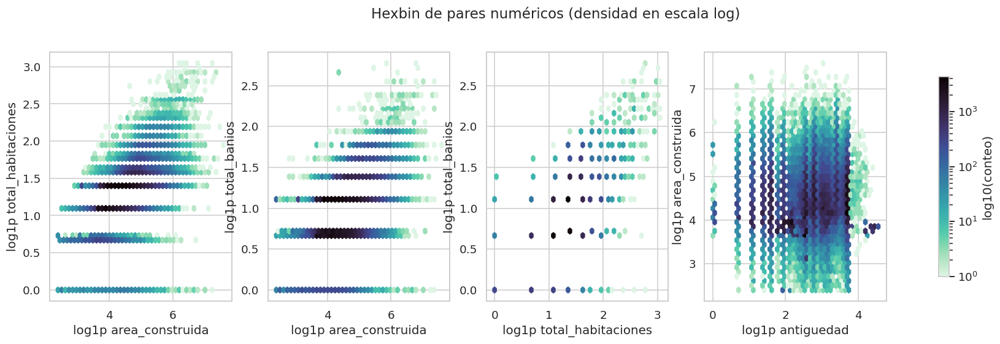
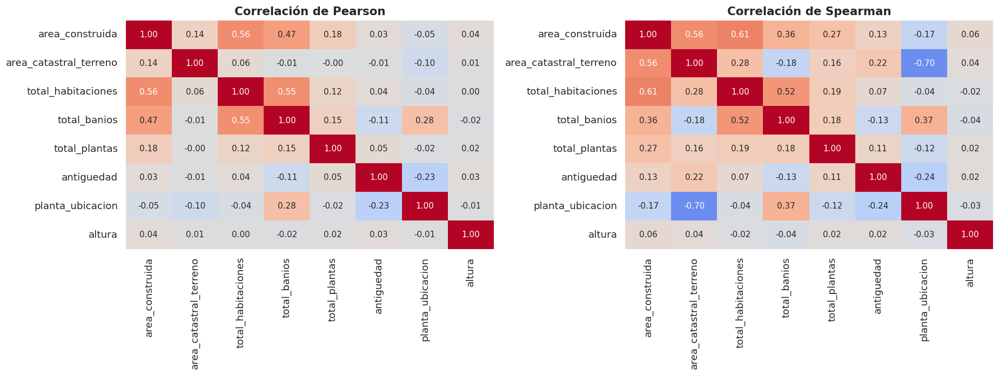
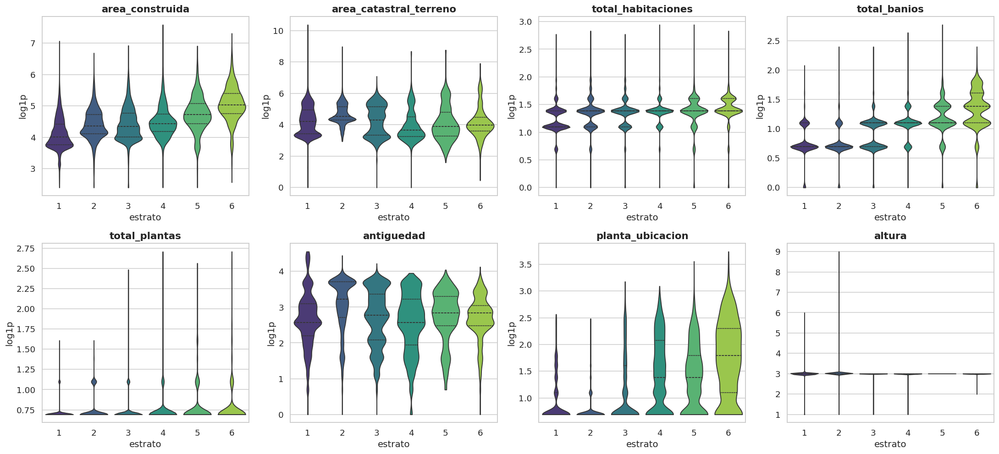
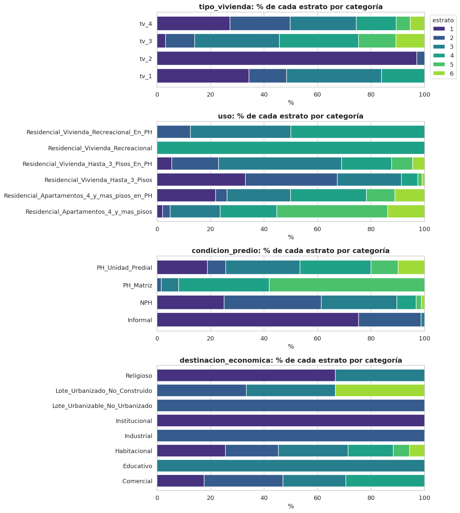
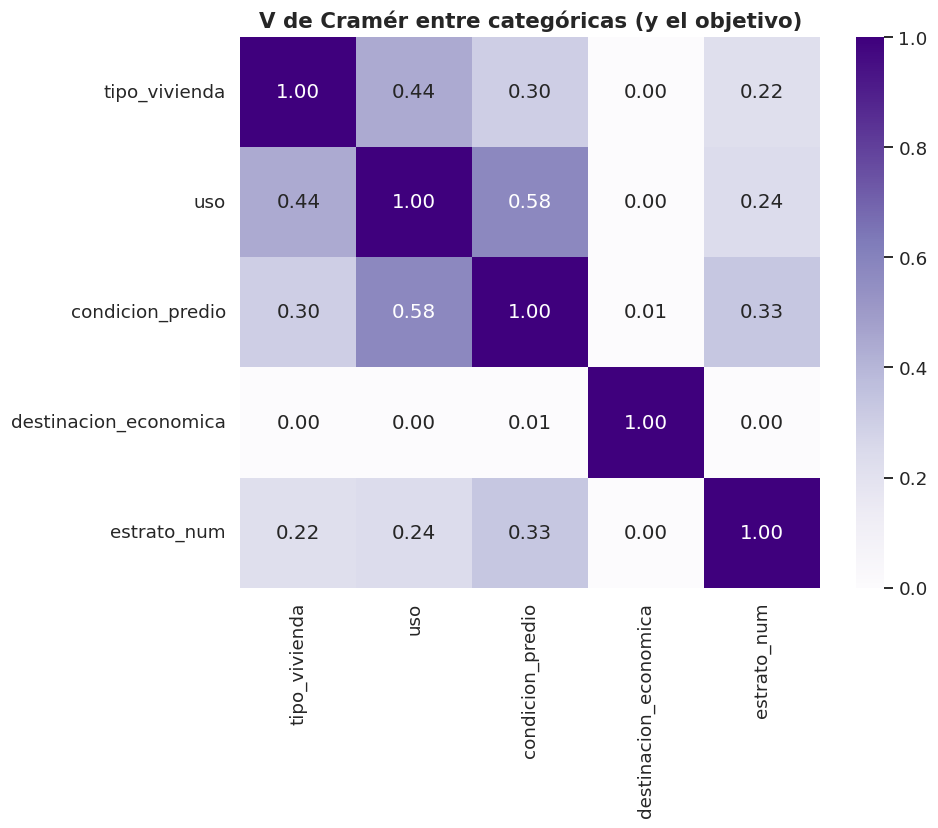

6. Análisis bidimensional (sección 2.3)#
Autores: María Carolina Cantillo Orozco (200179105) y Juan Camilo Oñoro Araujo (200177329)
Estructura (misma lógica que las notas de clase 9.10.4.1.3, generalizada de un objetivo binario a 6 clases ordinales):
Par de variables |
Gráfico |
Prueba / medida |
Tamaño de efecto |
|---|---|---|---|
numérica – numérica |
hexbin |
Pearson y Spearman |
|r| y |Pearson − Spearman| |
numérica – objetivo |
violín / boxplot |
Kruskal-Wallis (alternativa no paramétrica al ANOVA) |
η²_H, Spearman |
categórica – objetivo |
barras apiladas |
χ² |
V de Cramér |
categórica – categórica |
tabla de contingencia |
χ² |
V de Cramér |
cualquiera – objetivo |
— |
información mutua (no lineal) |
MI / H(Y) |
multicolinealidad |
heatmap |
VIF |
VIF |
Rigor estadístico. Con n ≈ 220 000 casi toda diferencia es «significativa», así que la conclusión se basa en el tamaño de efecto y los p-valores se corrigen por comparaciones múltiples (Holm). Además, estas pruebas suponen filas independientes, y aquí no lo son (unidades del mismo edificio, autocorrelación espacial fuerte): los p-valores son anticonservadores (demasiado pequeños). Por eso las conclusiones se apoyan en los tamaños de efecto, no en la significancia.
6.1 Numéricas vs. numéricas#

# Matrices de correlación de Pearson (lineal) y de Spearman (monótona, sobre
# rangos) y tabla de pares ordenada por |Pearson − Spearman|. Regla de las
# notas de clase: una diferencia > 0.2 indica relación no lineal o dominada por
# outliers, y en ese caso se prioriza Spearman.
Pm, Sm, dif = E.pearson_vs_spearman(train, nums)
fig, axes = plt.subplots(1, 2, figsize=(17, 6.5))
for ax, M, t in [(axes[0], Pm, "Pearson"), (axes[1], Sm, "Spearman")]:
# Escala de color fija en [−1, 1] en ambos paneles para compararlos directamente.
sns.heatmap(M, annot=True, fmt=".2f", cmap="coolwarm", vmin=-1, vmax=1, ax=ax, cbar=False,
annot_kws={"size": 10})
ax.set_title(f"Correlación de {t}")
fig.tight_layout()
G.guardar(fig, "06_correlaciones")
plt.show()
dif.head(12) # los 12 pares con mayor discrepancia entre ambos coeficientes

| var1 | var2 | pearson | spearman | |dif| | lectura | |
|---|---|---|---|---|---|---|
| 11 | area_catastral_terreno | planta_ubicacion | -0.102 | -0.695 | 0.593 | notable -> no lineal u outliers (priorizar Spe... |
| 0 | area_construida | area_catastral_terreno | 0.139 | 0.560 | 0.421 | notable -> no lineal u outliers (priorizar Spe... |
| 10 | area_catastral_terreno | antiguedad | -0.011 | 0.222 | 0.233 | notable -> no lineal u outliers (priorizar Spe... |
| 7 | area_catastral_terreno | total_habitaciones | 0.058 | 0.281 | 0.223 | notable -> no lineal u outliers (priorizar Spe... |
| 8 | area_catastral_terreno | total_banios | -0.015 | -0.177 | 0.162 | moderada -> revisar scatter/hexbin |
| 9 | area_catastral_terreno | total_plantas | -0.002 | 0.157 | 0.159 | moderada -> revisar scatter/hexbin |
| 5 | area_construida | planta_ubicacion | -0.053 | -0.175 | 0.122 | moderada -> revisar scatter/hexbin |
| 2 | area_construida | total_banios | 0.471 | 0.362 | 0.108 | moderada -> revisar scatter/hexbin |
| 4 | area_construida | antiguedad | 0.032 | 0.134 | 0.102 | moderada -> revisar scatter/hexbin |
| 23 | total_plantas | planta_ubicacion | -0.016 | -0.117 | 0.102 | moderada -> revisar scatter/hexbin |
| 3 | area_construida | total_plantas | 0.178 | 0.273 | 0.095 | trivial -> relación lineal (reportar Pearson) |
| 20 | total_banios | planta_ubicacion | 0.276 | 0.369 | 0.093 | trivial -> relación lineal (reportar Pearson) |
Interpretación
Regla de las notas de clase: si |Pearson − Spearman| > 0.2 la relación no es lineal o está dominada por outliers, y se prioriza Spearman.
Los cuatro pares con diferencia notable (> 0.2) involucran el terreno. El mayor es terreno–piso de ubicación: Pearson −0.102 frente a Spearman −0.695. La relación es fuerte y monótona (más alto el piso, menor la cuota de terreno de la unidad), pero no lineal: la cola de terreno (hasta 36 022 m² en train, cap. 5) aplasta el Pearson. Lo mismo ocurre en área construida–terreno (0.139 frente a 0.560), terreno–habitaciones (0.058 frente a 0.281) y terreno–antigüedad (−0.011 frente a 0.222).
Entre las variables de la vivienda en sí, las relaciones son casi lineales: área construida–habitaciones (0.56 frente a 0.61) y habitaciones–baños (0.55 frente a 0.52) no aparecen entre las discrepancias destacadas. Las reglas de limpieza del cap. 1 (exclusión de registros agregados, paso 2c, e incoherencias baños/habitaciones → NaN, paso 5) retiran justamente los registros extremos que inflarían el Pearson de estos pares. El resto de discrepancias son moderadas (0.10–0.16, p. ej. área construida–baños, 0.471 frente a 0.362) o triviales (área construida–plantas y baños–piso, < 0.1).
Consecuencia: para áreas y conteos se reporta Spearman, y el modelo usa
log1p(cap. 5), que convierte buena parte de estas relaciones monótonas en aproximadamente lineales.
6.2 Numéricas vs. objetivo#

# Numérica vs. objetivo: Kruskal-Wallis (alternativa no paramétrica al ANOVA de
# una vía; no supone normalidad, adecuada con las colas largas del cap. 5) y su
# tamaño de efecto η²_H = (H − k + 1)/(n − k). E.kruskal_eta2 también devuelve
# el Spearman con el estrato (dirección, ya que el estrato es ordinal) y la
# mediana por estrato (para ver si la relación es monótona).
kw = pd.DataFrame([E.kruskal_eta2(train, c, C.OBJETIVO) for c in nums + C.ESPACIALES]).set_index("variable")
# Corrección de Holm por comparaciones múltiples (se hacen 11 pruebas a la vez).
kw["p_Holm"] = E.ajuste_holm(kw["p"])
# Se ordena por tamaño de efecto, no por p: con n ≈ 220 000 todos los p son
# minúsculos y no discriminan; η²_H sí indica cuánto se asocia al estrato.
kw = kw.sort_values("eta2_H", ascending=False)
kw
| n | H | p | eta2_H | efecto | spearman_con_objetivo | mediana_e1 | mediana_e2 | mediana_e3 | mediana_e4 | mediana_e5 | mediana_e6 | p_Holm | |
|---|---|---|---|---|---|---|---|---|---|---|---|---|---|
| variable | |||||||||||||
| y_km | 218870 | 109,580.665 | 0.000 | 0.501 | grande | 0.658 | -3.505 | -4.496 | -0.770 | 2.290 | 2.848 | 3.180 | 0.000 |
| dist_centro_km | 218870 | 70,929.681 | 0.000 | 0.324 | grande | -0.427 | 7.430 | 5.935 | 3.992 | 5.401 | 5.911 | 5.775 | 0.000 |
| total_banios | 218842 | 68,307.939 | 0.000 | 0.312 | grande | 0.524 | 1.000 | 1.000 | 2.000 | 2.000 | 2.000 | 3.000 | 0.000 |
| x_km | 218870 | 56,221.316 | 0.000 | 0.257 | grande | 0.200 | -5.791 | -3.057 | -2.460 | -4.358 | -5.243 | -4.743 | 0.000 |
| planta_ubicacion | 218633 | 45,426.893 | 0.000 | 0.208 | grande | 0.380 | 1.000 | 1.000 | 1.000 | 3.000 | 3.000 | 5.000 | 0.000 |
| area_construida | 218870 | 39,555.037 | 0.000 | 0.181 | grande | 0.388 | 54.000 | 76.000 | 77.000 | 83.000 | 113.000 | 152.000 | 0.000 |
| total_habitaciones | 218599 | 16,681.876 | 0.000 | 0.076 | mediano | 0.255 | 2.000 | 3.000 | 3.000 | 3.000 | 3.000 | 3.000 | 0.000 |
| area_catastral_terreno | 218870 | 16,267.670 | 0.000 | 0.074 | mediano | -0.152 | 66.000 | 90.900 | 72.150 | 37.770 | 45.740 | 51.900 | 0.000 |
| antiguedad | 218741 | 12,359.206 | 0.000 | 0.056 | pequeño | -0.055 | 12.000 | 24.000 | 15.000 | 12.000 | 16.000 | 16.000 | 0.000 |
| total_plantas | 218869 | 4,009.654 | 0.000 | 0.018 | pequeño | 0.083 | 1.000 | 1.000 | 1.000 | 1.000 | 1.000 | 1.000 | 0.000 |
| altura | 218870 | 1,169.209 | 0.000 | 0.005 | trivial | 0.048 | 3.000 | 3.000 | 3.000 | 3.000 | 3.000 | 3.000 | 0.000 |
Cómo leer η²_H
η²_H = (H − k + 1)/(n − k) es la proporción de la variabilidad de los rangos explicada por el estrato. Umbrales usuales: < 0.01 trivial, 0.01–0.06 pequeño, 0.06–0.14 mediano, > 0.14 grande. La columna de Spearman indica la dirección (¿crece la variable con el estrato?) y las medianas por estrato muestran si la relación es monótona.
6.3 Categóricas vs. objetivo#

# Categórica vs. objetivo: prueba χ² de independencia sobre la tabla de
# contingencia y V de Cramér como tamaño de efecto (0 = independencia,
# 1 = asociación perfecta). E.cramers_v aplica la corrección de sesgo de
# Bergsma (2013), porque la V sin corregir se infla con muchas categorías.
filas = []
for c in cats:
# Los nulos se tratan como una categoría más ("faltante"): si faltar un
# dato se asocia con el estrato, eso también es información.
r = E.cramers_v(train[c].fillna("faltante"), train[C.OBJETIVO])
filas.append({"variable": c, "categorías": train[c].nunique(), "chi2": r["chi2"], "gl": r["gl"],
"p": r["p"], "V_Cramér": r["V"], "lectura": E.interpretar_v(r["V"])})
chi_obj = pd.DataFrame(filas).set_index("variable")
chi_obj["p_Holm"] = E.ajuste_holm(chi_obj["p"]) # Holm dentro de esta familia de pruebas
chi_obj.sort_values("V_Cramér", ascending=False)
| categorías | chi2 | gl | p | V_Cramér | lectura | p_Holm | |
|---|---|---|---|---|---|---|---|
| variable | |||||||
| condicion_predio | 4 | 72,809.688 | 15 | 0.000 | 0.333 | moderada | 0.000 |
| uso | 6 | 62,828.235 | 25 | 0.000 | 0.240 | débil | 0.000 |
| tipo_vivienda | 4 | 31,583.682 | 15 | 0.000 | 0.219 | débil | 0.000 |
| destinacion_economica | 8 | 34.954 | 35 | 0.470 | 0.000 | despreciable | 0.470 |
6.4 Categóricas vs. categóricas#
# Matriz de V de Cramér entre todas las categóricas (y el estrato) para
# detectar redundancias entre predictoras, p. ej. uso y condicion_predio, que
# codifican ambas el régimen de propiedad horizontal.
todas = cats + [C.OBJETIVO]
# Diagonal = 1 (cada variable consigo misma); la matriz es simétrica.
Vm = pd.DataFrame(np.eye(len(todas)), index=todas, columns=todas)
pv = [] # (var1, var2, p, V): los p se reutilizan en la corrección global (6.9)
for i, a in enumerate(todas):
for b in todas[i + 1:]: # solo la mitad superior; la otra se copia
r = E.cramers_v(train[a].fillna("faltante"), train[b].fillna("faltante"))
Vm.loc[a, b] = Vm.loc[b, a] = r["V"]
pv.append((a, b, r["p"], r["V"]))
fig, ax = plt.subplots(figsize=(8.5, 6.5))
sns.heatmap(Vm, annot=True, fmt=".2f", cmap="Purples", vmin=0, vmax=1, ax=ax)
ax.set_title("V de Cramér entre categóricas (y el objetivo)")
G.guardar(fig, "06_cramer")
plt.show()

# Tabla de contingencia uso × condicion_predio (% por fila) para ver de dónde
# sale la V alta: si las categorías "…en_PH" de uso caen casi siempre en
# PH_Unidad_Predial, ambas variables dicen casi lo mismo.
if "uso" in cats and "condicion_predio" in cats:
print("Tabla de contingencia uso × condicion_predio (% por fila):")
display(pd.crosstab(train["uso"], train["condicion_predio"], normalize="index").mul(100).round(1))
Tabla de contingencia uso × condicion_predio (% por fila):
| condicion_predio | Informal | NPH | PH_Matriz | PH_Unidad_Predial |
|---|---|---|---|---|
| uso | ||||
| Residencial_Apartamentos_4_y_mas_pisos | 0.000 | 32.900 | 0.000 | 67.100 |
| Residencial_Apartamentos_4_y_mas_pisos_en_PH | 0.000 | 0.000 | 0.100 | 99.900 |
| Residencial_Vivienda_Hasta_3_Pisos | 16.000 | 84.000 | 0.000 | 0.000 |
| Residencial_Vivienda_Hasta_3_Pisos_En_PH | 0.000 | 0.000 | 0.000 | 100.000 |
| Residencial_Vivienda_Recreacional | 0.000 | 100.000 | 0.000 | 0.000 |
| Residencial_Vivienda_Recreacional_En_PH | 0.000 | 0.000 | 0.000 | 100.000 |
6.5 Categóricas vs. numéricas (predictoras entre sí)#
¿Cambian las características físicas según el régimen/uso? (Kruskal-Wallis y η²_H.) Sirve para detectar redundancia entre una categórica y una numérica.
# Categórica vs. numérica entre predictoras: Kruskal-Wallis de cada numérica
# agrupada por cada categórica y su η²_H. Un η²_H grande indica que la
# categórica "explica" buena parte de la numérica (posible redundancia).
filas = []
for c in cats:
for v in nums:
# Se crea una columna auxiliar _g con la categórica (nulos = "faltante").
# ordinal=False: las categorías no tienen orden, así que no se calcula
# Spearman (solo tiene sentido con el estrato).
r = E.kruskal_eta2(train.assign(_g=train[c].fillna("faltante")), v, "_g", ordinal=False)
filas.append({"categórica": c, "numérica": v, "eta2_H": r["eta2_H"], "p": r["p"],
"efecto": r["efecto"]})
cat_num = pd.DataFrame(filas)
cat_num["p_Holm"] = E.ajuste_holm(cat_num["p"])
# Se presenta como matriz numérica × categórica con gradiente de color en η²_H.
cat_num.pivot(index="numérica", columns="categórica", values="eta2_H").style.background_gradient(cmap="Greens").format("{:.3f}")
| categórica | condicion_predio | destinacion_economica | tipo_vivienda | uso |
|---|---|---|---|---|
| numérica | ||||
| altura | 0.003 | 0.000 | 0.103 | 0.004 |
| antiguedad | 0.054 | 0.000 | 0.041 | 0.062 |
| area_catastral_terreno | 0.549 | 0.000 | 0.129 | 0.616 |
| area_construida | 0.096 | 0.000 | 0.121 | 0.078 |
| planta_ubicacion | 0.522 | 0.000 | 0.087 | 0.660 |
| total_banios | 0.168 | 0.000 | 0.024 | 0.165 |
| total_habitaciones | 0.049 | 0.000 | 0.020 | 0.011 |
| total_plantas | 0.009 | 0.000 | 0.029 | 0.075 |
6.6 Predictoras vs. objetivo: información mutua#
La información mutua (MI) capta relaciones no lineales y no monótonas que Spearman o η² pueden subestimar. Se reporta también MI / H(estrato): la fracción de la incertidumbre del estrato que reduce conocer la variable. Por costo computacional (estimador por k vecinos) se calcula sobre una muestra estratificada de train.
# Información mutua (MI) entre cada predictora y el estrato. A diferencia de
# Spearman o η²_H, la MI detecta cualquier dependencia, incluso no monótona
# (formas en U). Se estima sobre una muestra estratificada de train
# (C.N_MUESTRA_MI filas) porque el estimador por k vecinos es costoso.
m = S.muestra_estratificada(train, C.N_MUESTRA_MI)
X = pd.DataFrame(index=m.index)
discretas = [] # máscara que indica al estimador qué columnas son discretas
for c in nums + C.ESPACIALES:
# mutual_info_classif no acepta NaN; se imputa con la mediana de la muestra.
X[c] = m[c].fillna(m[c].median())
# Los conteos se tratan como discretos (estimador por frecuencias); las
# continuas usan el estimador por k vecinos (Ross 2014, variante de Kraskov).
discretas.append(c in ["total_habitaciones", "total_banios", "total_plantas", "planta_ubicacion"])
for c in cats:
# Las categóricas se codifican como enteros; al marcarlas como discretas,
# el orden arbitrario de los códigos no afecta a la MI.
X[c] = m[c].fillna("faltante").astype("category").cat.codes
discretas.append(True)
# random_state fijo: el estimador añade un ruido pequeño a las continuas.
mi = mutual_info_classif(X, m[C.OBJETIVO], discrete_features=np.array(discretas), random_state=C.SEED)
# Entropía del estrato en nats (log natural, mismas unidades que la MI):
# MI / H(Y) es la fracción de la incertidumbre del estrato que se reduce.
H = E.entropia(m[C.OBJETIVO])
mi_tabla = pd.DataFrame({"MI (nats)": mi, "MI / H(Y)": mi / H}, index=X.columns).sort_values("MI (nats)",
ascending=False)
mi_tabla
| MI (nats) | MI / H(Y) | |
|---|---|---|
| y_km | 1.046 | 0.633 |
| dist_centro_km | 1.001 | 0.606 |
| x_km | 0.975 | 0.590 |
| area_catastral_terreno | 0.664 | 0.401 |
| area_construida | 0.270 | 0.163 |
| total_banios | 0.195 | 0.118 |
| condicion_predio | 0.177 | 0.107 |
| antiguedad | 0.172 | 0.104 |
| uso | 0.158 | 0.096 |
| planta_ubicacion | 0.128 | 0.077 |
| tipo_vivienda | 0.079 | 0.048 |
| total_habitaciones | 0.061 | 0.037 |
| total_plantas | 0.021 | 0.013 |
| altura | 0.008 | 0.005 |
| destinacion_economica | 0.000 | 0.000 |
6.7 Ranking consolidado de asociación con el estrato#
# Ranking consolidado: une en una tabla la MI con las medidas de efecto
# calculadas antes. Pandas alinea por índice (nombre de variable), así que
# η²_H y Spearman quedan en NaN para las categóricas y la V de Cramér en NaN
# para las numéricas: cada medida solo aplica a su tipo de variable.
rank = mi_tabla.copy()
rank["η²_H (num.)"] = kw["eta2_H"]
rank["Spearman (num.)"] = kw["spearman_con_objetivo"]
rank["V Cramér (cat.)"] = chi_obj["V_Cramér"]
rank["tipo"] = ["categórica" if c in cats else ("espacial" if c in C.ESPACIALES else "numérica") for c in rank.index]
rank
| MI (nats) | MI / H(Y) | η²_H (num.) | Spearman (num.) | V Cramér (cat.) | tipo | |
|---|---|---|---|---|---|---|
| y_km | 1.046 | 0.633 | 0.501 | 0.658 | NaN | espacial |
| dist_centro_km | 1.001 | 0.606 | 0.324 | -0.427 | NaN | espacial |
| x_km | 0.975 | 0.590 | 0.257 | 0.200 | NaN | espacial |
| area_catastral_terreno | 0.664 | 0.401 | 0.074 | -0.152 | NaN | numérica |
| area_construida | 0.270 | 0.163 | 0.181 | 0.388 | NaN | numérica |
| total_banios | 0.195 | 0.118 | 0.312 | 0.524 | NaN | numérica |
| condicion_predio | 0.177 | 0.107 | NaN | NaN | 0.333 | categórica |
| antiguedad | 0.172 | 0.104 | 0.056 | -0.055 | NaN | numérica |
| uso | 0.158 | 0.096 | NaN | NaN | 0.240 | categórica |
| planta_ubicacion | 0.128 | 0.077 | 0.208 | 0.380 | NaN | numérica |
| tipo_vivienda | 0.079 | 0.048 | NaN | NaN | 0.219 | categórica |
| total_habitaciones | 0.061 | 0.037 | 0.076 | 0.255 | NaN | numérica |
| total_plantas | 0.021 | 0.013 | 0.018 | 0.083 | NaN | numérica |
| altura | 0.008 | 0.005 | 0.005 | 0.048 | NaN | numérica |
| destinacion_economica | 0.000 | 0.000 | NaN | NaN | 0.000 | categórica |
6.8 Multicolinealidad (VIF)#
VIF_j = 1 / (1 − R²_j), con R²_j de regresar la variable j sobre las demás. Se calcula con las numéricas en la escala en que entrarán al modelo (log1p para las asimétricas) e imputadas con la mediana de train. Umbrales usuales: < 5 aceptable, 5–10 vigilar, > 10 multicolinealidad alta.
# VIF de las numéricas físicas en la escala del modelo: log1p en las
# asimétricas (las colas largas distorsionarían las regresiones auxiliares) e
# imputación con la mediana de train (como hará el Pipeline).
Z = train[nums].copy()
for c in num_log:
Z[c] = np.log1p(Z[c].clip(lower=0))
Z = Z.fillna(Z.median())
# E.vif estandariza y regresa cada variable sobre las demás con mínimos
# cuadrados: VIF_j = 1/(1 − R²_j).
tabla_vif = E.vif(Z, nums)
tabla_vif
| R2_con_las_demás | VIF | lectura | |
|---|---|---|---|
| variable | |||
| area_catastral_terreno | 0.637 | 2.758 | aceptable |
| area_construida | 0.610 | 2.562 | aceptable |
| total_banios | 0.513 | 2.054 | aceptable |
| planta_ubicacion | 0.487 | 1.948 | aceptable |
| total_habitaciones | 0.461 | 1.854 | aceptable |
| total_plantas | 0.080 | 1.086 | aceptable |
| antiguedad | 0.067 | 1.071 | aceptable |
| altura | 0.008 | 1.008 | aceptable |
# Mismo VIF añadiendo las coordenadas: interesa saber si x_km, y_km y
# dist_centro_km son redundantes entre sí (la distancia al centro es función
# geométrica de x e y). Solo se muestran las filas de las espaciales.
Z2 = pd.concat([Z, train[C.ESPACIALES]], axis=1)
vif_esp = E.vif(Z2, nums + C.ESPACIALES)
vif_esp.loc[C.ESPACIALES]
| R2_con_las_demás | VIF | lectura | |
|---|---|---|---|
| variable | |||
| x_km | 0.814 | 5.390 | moderada (vigilar) |
| y_km | 0.484 | 1.938 | aceptable |
| dist_centro_km | 0.799 | 4.968 | aceptable |
Regla de decisión: mientras el VIF máximo sea > 10, se elimina, entre las variables con VIF > 10, la que tenga menor asociación con el estrato (η²_H). Así se reduce la redundancia perdiendo la menor información posible.
# Eliminación iterativa por VIF: se recalcula el VIF tras cada retirada porque
# quitar una variable cambia el VIF de las demás. Entre las de VIF > 10 se
# retira la menos asociada al estrato (menor η²_H), para perder la mínima
# información útil para predecir.
restantes = list(nums)
eliminadas = []
while True:
t = E.vif(Z, restantes)
altas = t[t["VIF"] > 10]
if altas.empty:
break # ya no queda multicolinealidad alta
peor = kw.loc[altas.index, "eta2_H"].idxmin()
eliminadas.append(peor)
restantes.remove(peor)
print("Eliminadas por multicolinealidad:", eliminadas or "ninguna")
# Se registra la decisión (aunque la lista esté vacía) para trazabilidad.
C.guardar_decision("excluir_multicolinealidad", eliminadas,
"VIF > 10 (cap. 6.8); se retira la de menor η²_H con el estrato.")
Eliminadas por multicolinealidad: ninguna
[decisión registrada] excluir_multicolinealidad = []
motivo: VIF > 10 (cap. 6.8); se retira la de menor η²_H con el estrato.
6.9 Todas las pruebas con corrección por comparaciones múltiples#
# Corrección global: se reúnen en una sola familia todas las pruebas contra el
# estrato (Kruskal-Wallis y χ²) y las χ² entre categóricas, y se ajustan con
# Holm (controla el error de familia, FWER) y Benjamini-Hochberg (controla la
# tasa de falsos descubrimientos, FDR, menos conservador).
familia = pd.concat([
kw[["p"]].assign(prueba="Kruskal-Wallis vs estrato"),
chi_obj[["p"]].assign(prueba="chi² vs estrato"),
# De pv se excluyen los pares con el objetivo, que ya están en chi_obj.
pd.DataFrame([(f"{a}×{b}", p) for a, b, p, _ in pv if C.OBJETIVO not in (a, b)], columns=["par", "p"]).set_index("par").assign(prueba="chi² cat×cat"),
])
familia["p_Holm"] = E.ajuste_holm(familia["p"])
familia["p_BH (FDR)"] = E.ajuste_bh(familia["p"])
# Recordatorio: los p suponen filas independientes (no lo son: unidades de un
# mismo edificio, autocorrelación espacial), así que incluso tras Holm son
# optimistas; las decisiones se basan en los tamaños de efecto.
familia["significativa (Holm 5%)"] = familia["p_Holm"] < 0.05
print(f"{familia['significativa (Holm 5%)'].sum()} de {len(familia)} pruebas significativas tras Holm")
familia.sort_values("p")
18 de 21 pruebas significativas tras Holm
| p | prueba | p_Holm | p_BH (FDR) | significativa (Holm 5%) | |
|---|---|---|---|---|---|
| y_km | 0.000 | Kruskal-Wallis vs estrato | 0.000 | 0.000 | True |
| dist_centro_km | 0.000 | Kruskal-Wallis vs estrato | 0.000 | 0.000 | True |
| total_banios | 0.000 | Kruskal-Wallis vs estrato | 0.000 | 0.000 | True |
| x_km | 0.000 | Kruskal-Wallis vs estrato | 0.000 | 0.000 | True |
| planta_ubicacion | 0.000 | Kruskal-Wallis vs estrato | 0.000 | 0.000 | True |
| area_construida | 0.000 | Kruskal-Wallis vs estrato | 0.000 | 0.000 | True |
| total_habitaciones | 0.000 | Kruskal-Wallis vs estrato | 0.000 | 0.000 | True |
| area_catastral_terreno | 0.000 | Kruskal-Wallis vs estrato | 0.000 | 0.000 | True |
| antiguedad | 0.000 | Kruskal-Wallis vs estrato | 0.000 | 0.000 | True |
| total_plantas | 0.000 | Kruskal-Wallis vs estrato | 0.000 | 0.000 | True |
| tipo_vivienda | 0.000 | chi² vs estrato | 0.000 | 0.000 | True |
| uso | 0.000 | chi² vs estrato | 0.000 | 0.000 | True |
| tipo_vivienda×uso | 0.000 | chi² cat×cat | 0.000 | 0.000 | True |
| condicion_predio | 0.000 | chi² vs estrato | 0.000 | 0.000 | True |
| uso×condicion_predio | 0.000 | chi² cat×cat | 0.000 | 0.000 | True |
| tipo_vivienda×condicion_predio | 0.000 | chi² cat×cat | 0.000 | 0.000 | True |
| altura | 0.000 | Kruskal-Wallis vs estrato | 0.000 | 0.000 | True |
| condicion_predio×destinacion_economica | 0.000 | chi² cat×cat | 0.000 | 0.000 | True |
| destinacion_economica | 0.470 | chi² vs estrato | 1.000 | 0.520 | False |
| uso×destinacion_economica | 0.611 | chi² cat×cat | 1.000 | 0.641 | False |
| tipo_vivienda×destinacion_economica | 0.851 | chi² cat×cat | 1.000 | 0.851 | False |
6.10 Interpretación y selección preliminar de variables#
Interpretación
La ubicación domina. Por tamaño de efecto (η²_H de Kruskal-Wallis), la variable más asociada al estrato es
y_km(eje norte-sur, η² = 0.50, Spearman 0.66), seguida de la distancia al centro (0.32) yx_km(0.26). Entre las físicas destacan baños (η² = 0.31, Spearman 0.52), piso de ubicación (0.21) y área construida (0.18): mediana de 54 m² en estrato 1 frente a 152 m² en estrato 6. Habitaciones (0.076) y terreno (0.074) tienen efectos medianos; antigüedad (0.056) y plantas (0.018) pequeños, yalturaes trivial (0.005).No todo es monótono. El terreno tiene Spearman negativo (−0.15) y sus medianas por estrato suben de 1 a 2 (66 → 90.9 m²) y luego caen en 4–6 (38–52 m²): en los estratos altos predominan apartamentos PH con cuotas de terreno pequeñas. Algo parecido pasa con
x_kmy la distancia al centro, cuyas medianas no siguen el orden del estrato. Una regresión logística con términos lineales no captura bien estas formas en U.Información mutua. Coincide en poner la ubicación arriba (MI/H(Y) de 0.59–0.63) pero sube mucho al terreno (0.40). Hay que leer la MI con cautela: coordenadas y terreno se repiten exactamente en todas las unidades de un edificio, y como el estrato casi no varía dentro del edificio (ICC = 0.992), el estimador de MI por vecinos premia variables que «identifican el edificio», más que relaciones generalizables.
Categóricas.
condicion_predio(V = 0.33, moderada),uso(0.24) ytipo_vivienda(0.22) superan el umbral de 0.1;destinacion_economicatiene V = 0 (p = 0.47) y se descarta.Redundancias.
usoycondicion_predioestán muy asociadas: las categorías «…en_PH» son 99.9–100 %PH_Unidad_Predial. Con regularización L2 la logística tolera esta redundancia para predecir, pero sus coeficientes individuales se interpretan con cautela. Entre numéricas no hay multicolinealidad preocupante: todos los VIF < 3 (el mayor, terreno con 2.76); solox_kmllega a 5.4 (ydist_centro_kma 5.0) cuando entran las espaciales, por su relación geométrica.Pruebas múltiples. 18 de 21 pruebas siguen significativas tras Holm; con n ≈ 220 000 casi todo es «significativo», por eso las decisiones se toman con los tamaños de efecto, no con los p-valores. Además, la dependencia entre unidades de un mismo edificio hace que estos p-valores sean optimistas (el n efectivo es mucho menor, cap. 1).
Selección preliminar: las 8 numéricas (ninguna eliminada por VIF), las 3 categóricas con V ≥ 0.1 y las 3 espaciales (justificadas en el cap. 8).
alturase conserva por ahora, aunque aporta muy poco. La lista final se fija tras la auditoría de fuga (cap. 9).
# Selección preliminar registrada para el modelo: categóricas con V ≥ 0.1
# (umbral de asociación "débil" o mayor; por debajo es despreciable) y
# numéricas que sobrevivieron al filtro de VIF. La lista definitiva se fija
# tras la auditoría de fuga (cap. 9).
cats_utiles = chi_obj.index[chi_obj["V_Cramér"] >= 0.1].tolist()
C.guardar_decision("categoricas_preliminares", cats_utiles,
"Categóricas con V de Cramér ≥ 0.1 con el estrato (cap. 6.3).")
C.guardar_decision("numericas_preliminares", [c for c in nums if c not in eliminadas],
"Numéricas tras quitar las de VIF alto (cap. 6.8).")
[decisión registrada] categoricas_preliminares = ['tipo_vivienda', 'uso', 'condicion_predio']
motivo: Categóricas con V de Cramér ≥ 0.1 con el estrato (cap. 6.3).
[decisión registrada] numericas_preliminares = ['area_construida', 'area_catastral_terreno', 'total_habitaciones', 'total_banios', 'total_plantas', 'antiguedad', 'planta_ubicacion', 'altura']
motivo: Numéricas tras quitar las de VIF alto (cap. 6.8).